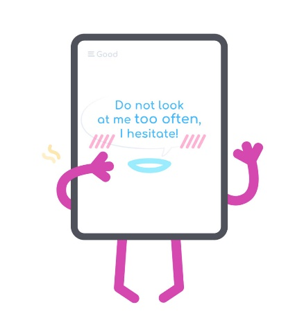

always Check a translation is worth it?
HOW OFTEN CAN WE CHECK TRANSLATION?

Try to translate on your own before getting a peek to automatic translation. The EasyLang provides the possibility to hide the translation. And also Tooltips with a dictionary can view definitions from dictionaries.
That means it shows English vocabulary entries for a word. Therefore, you can take highly productive learning path.
Summary of Online Translators
Google Translate – on the fly improving service. After the translation completed, the resulting translation can be corrected. Correction is executed with the simple move of a mouse.
Microsoft Translator – getting pretty good with technical articles.
Promt Online - one of the original translate program market
Yahoo Translate – request for beforehand correct articles, i.e. can’t propose some corrections, as Google Translate does.